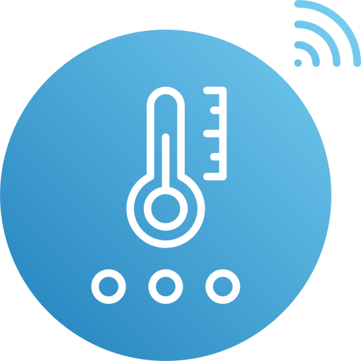

<ion-header [translucent]="true">
  <ion-toolbar color="primary">
    <ion-title>
      Dispositivos de AgroTech
    </ion-title>
  </ion-toolbar>
</ion-header>

<ion-content [fullscreen]="true">
  <ion-header collapse="condense">
    <ion-toolbar>
      <ion-title size="large">Dispositivos de AgroTech</ion-title>
    </ion-toolbar>
  </ion-header>

  <div id="container">
    <ion-list>
      <ion-item button *ngFor="let dispositivo of dispositivos"
                [routerLink]="['/dispositivos', dispositivo.dispositivoId]"
                [queryParams]="{ nombre: dispositivo.nombre, ubicacion: dispositivo.ubicacion }">
        <ion-avatar aria-hidden="true" slot="start">
          
        </ion-avatar>
        <ion-label resaltar>
          <h2>{{ dispositivo.nombre }}</h2>
          <p>{{ dispositivo.ubicacion }}</p>
        </ion-label>
      </ion-item>
    </ion-list>
  </div>
</ion-content>
